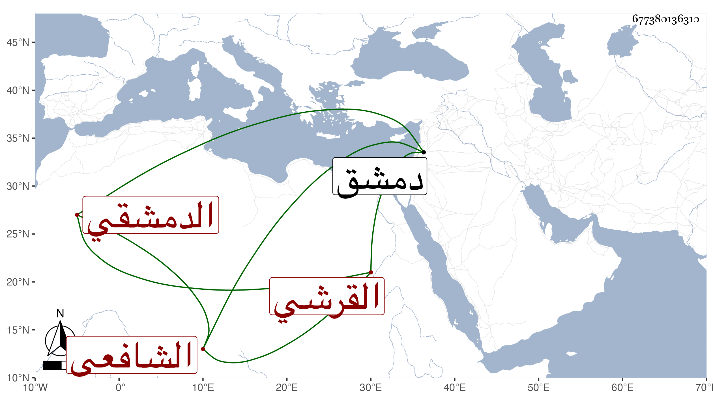

0902Sakhawi.DawLamic.ITO20230111-ara1.EIS1600.677380136310
Biography ID: 677380136310
543
علي بن إبراهيم بن المؤرخ الشمس محمد بن إبراهيم بن أبي بكر بن عبد العزيز العلاء أبو الحسن القرشي الدمشقي الشافعي ويعرف كسلفه بابن الجزري ولد سنة ثمان أو تسع وأربعين وسبعمائة وبالأول جزم شيخنا في إنبائه ، وقال : ومات أبوه وله سنة فرباه عمه نصير الدين محمد وأسمعه عليه التاسع عشر من أمالي الحسن بن رشيق وحضر على المرداوي خاتمة أصحاب عمر الكرماني بالحضور مجالس المخلدي وأربعي عبد الخالق الشحامي وسمع على الكمال بن حبيب وابن قواليح وابن أميلة ومحمد بن الحسن بن محمد بن عمار الحارثي واشتغل بالفقه وبرع فيه وأعاد بالتقوية وعمل الميعاد وقرأ الحديث بجامع بني أمية وباشر نظر الأيتام فحمدت سيرته وحج مرارا وجاور وحدث سمع منه الفضلاء ، وأورده التقي بن فهد في معجمه وكذا شيخنا وقال : أجاز لي غير مرة زاد في إنبائه مع خفض الجناح وطهارة اللسان ولين العريكة قال : وعلق في الوفيات واجتيح في شيء كثير من ماله في فتنة اللنك ولم يكن فيه ما يعاب به إلا مباشرته مع قضاة السوء . مات بدمشق في ذي الحجة سنة ثلاث عشرة ، وهو في عقود المقريزي رحمه الله .
